神奈川県でおすすめのLLMO会社10選｜費用相場と選び方もわかりやすく解説

神奈川県でLLMO会社を探していても、どこを基準に選べばよいのかわかりにくいと感じる方は多いはずです。実際に神奈川県は、横浜・川崎のような都市型商圏だけでなく、湘南の来訪型商圏、県央や相模原の広域商圏まで抱えており、同じ県内でも集客の考え方が大きく変わります。
そのため、単にAIに強そうな会社を選ぶだけではなく、自社の商圏や業種に合った設計ができるかを見極めることが大切です。そこで本記事では、神奈川県に本社がある会社に絞って、おすすめのLLMO会社を10社紹介します。
まずはLLMO対策の基本を押さえたい方は基礎記事から、全国の比較軸を見たい方はLLMO対策会社の比較記事、BtoBの判断基準まで確認したい方はBtoB向けLLMO会社の比較記事も参考になります。現状把握から始めたい場合は無料LLMO診断も活用できます。
目次
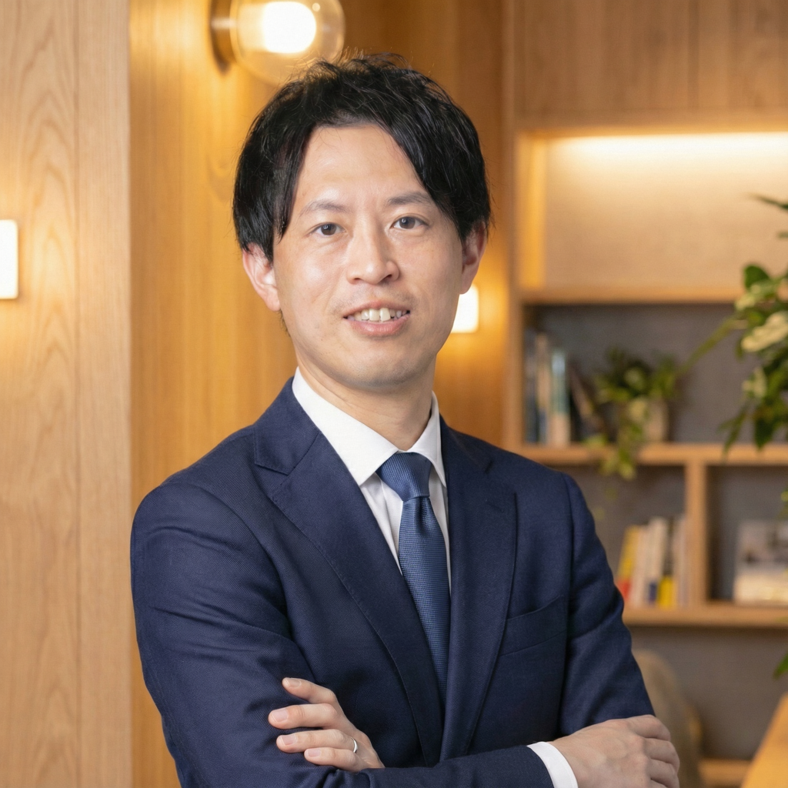
神奈川県でおすすめのLLMO会社10選
神奈川県でおすすめのLLMO会社を選ぶなら、まずは「神奈川県に本社があるか」を見るのがわかりやすいです。横浜・川崎の都市型商圏、湘南の来訪型商圏、県央や相模原の広域商圏は探し方が違うため、県内の空気感を理解している会社のほうが、実際の施策まで落とし込みやすくなります。
今回は、神奈川県に本社があり、LLMO、AI検索最適化、SEO、Web集客支援まで対応している会社を改めて10社リサーチしました。まずは会社ごとの特徴を押さえながら、自社に合う候補を絞っていきましょう。
| 会社名 | 主な特徴 | 向いている会社 |
|---|---|---|
| 株式会社エンカラーズ | SEO・Web制作とAIO/LLMO対策を一体で支援 | BtoBサイトやECの導線まで整えたい会社 |
| 株式会社仁頼 | GEOを明確に打ち出す横浜のデジタルマーケ会社 | AI検索での見つかり方を重視したい会社 |
| 株式会社Piftee | SEO×AIO/LLMOを専門で支援 | 検索流入全体を強化したい会社 |
| プリズムゲート株式会社 | 制作会社寄りにLLMO対応まで相談しやすい | サイトの見せ方から見直したい会社 |
| 株式会社Mayui | 厚木発でSEOとCVR改善を含めて支援 | 県央エリアで成果導線まで整えたい会社 |
| 株式会社shicoo | 鎌倉発でコンテンツと集客の両面を支援 | 地域密着型で伴走してほしい会社 |
| 株式会社ベルカ | 横浜でSEO基盤づくりに強み | まずは検索流入の土台を固めたい会社 |
| 株式会社ハマ企画 | 横浜の中小企業向け伴走型マーケ支援 | 運用改善を継続して回したい会社 |
| 株式会社YTC・PLUS | 制作・EC・システムまで横断対応 | 技術面までまとめて相談したい会社 |
| Law'z LLC. | 横浜でSEO対策を専門に打ち出す会社 | 地域密着でSEOの基礎を固めたい会社 |
株式会社AIMAは神奈川本社の会社ではありませんが、全国対応でLLMO支援を提供しています。月額5万円のLLMO支援は初期費用なし・1ヶ月単位で始められ、質問設計、記事制作、引用チェックに絞って実務を進められます。まずは現状だけ確認したい場合は無料LLMO診断から入るのもおすすめです。
1. 株式会社エンカラーズ
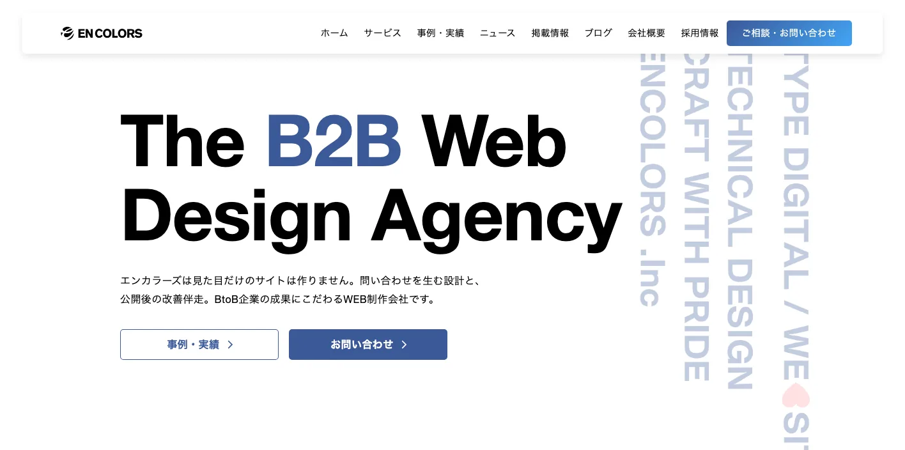
株式会社エンカラーズは、横浜市西区に本社を置くデジタルマーケティング会社です。SEO対策やWeb制作に加えて、AIO・LLMO対策の専用ページも公開しており、AIに選ばれるためのコンテンツ設計や実行支援まで相談しやすいのが特徴です。
神奈川県内でも、BtoBサイトやECサイト、企業サイトの導線整理を含めて改善したい会社に向いています。LLMOだけを単独で切り出すというより、SEOやサイト改善と一体で進めたい会社と相性がよい候補です。
2. 株式会社仁頼
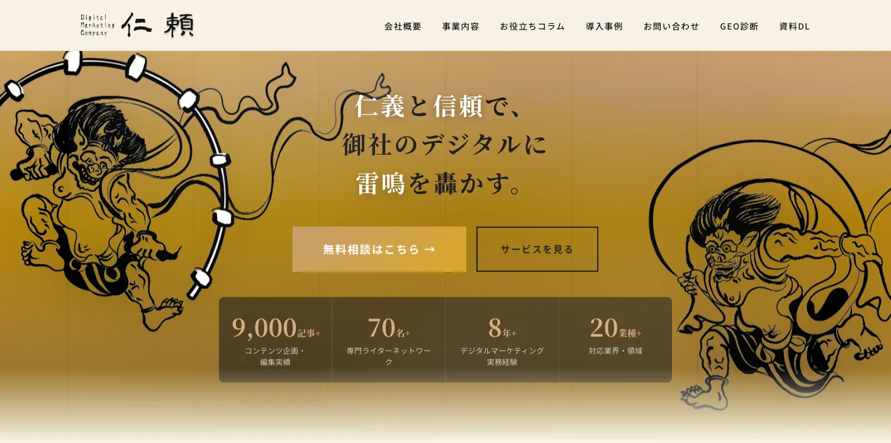
株式会社仁頼は、横浜市神奈川区に本社を置くデジタルマーケティング会社です。GEO対策（AI検索最適化）を明確に打ち出しており、SEO、コンテンツマーケティング、広告運用、Web制作まで幅広く対応しています。
AI検索対策を前面に出している点がわかりやすく、神奈川県内でもAIにどう見つけられるかを意識して依頼先を探したい会社に向いています。SEOだけでなく、AI時代を踏まえた支援を受けたい場合に検討しやすいです。
3. 株式会社Piftee
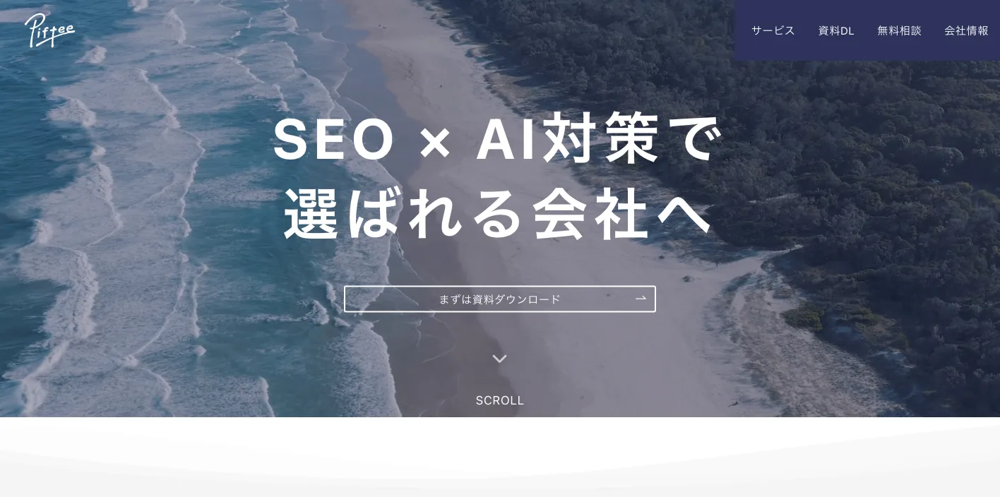
株式会社Pifteeは、横浜市西区に本社を置くSEO×AI対策の専門会社です。公式サイトでも、AIO・LLMO・GEO・AEOまで含めたAI検索最適化を案内しており、従来のSEOと切り分けずに支援している点が特徴です。
神奈川県で、SEOの延長線上としてLLMOを進めたい会社に向いています。記事制作や被リンク施策まで含めて、検索流入全体を見ながら改善したい会社に合いやすい候補です。
4. プリズムゲート株式会社
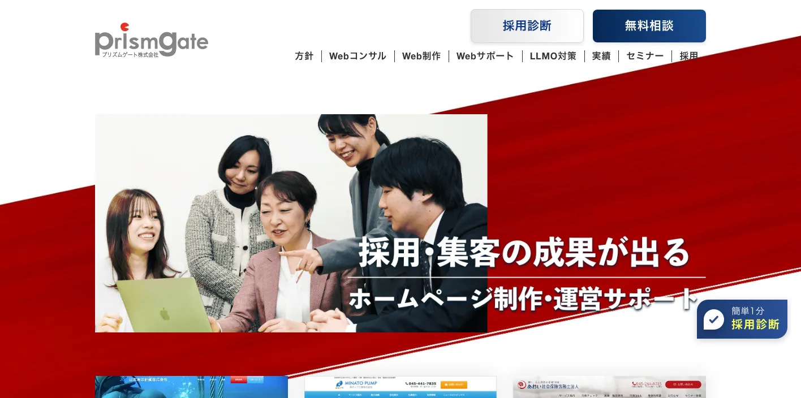
プリズムゲート株式会社は、横浜市中区に本社を置くWeb制作会社です。もともとWebサイト構築やSEO対策を手がけてきた会社ですが、現在はLLMO対策の専用サービスも公開しており、既存サイトのAI対応や新規制作にも対応しています。
神奈川県の中小企業で、制作会社寄りの支援を受けながらAI検索対策を進めたい場合に向いています。採用サイトや集客サイトなど、見せ方まで含めて整えたい会社と相性がよいです。
5. 株式会社Mayui
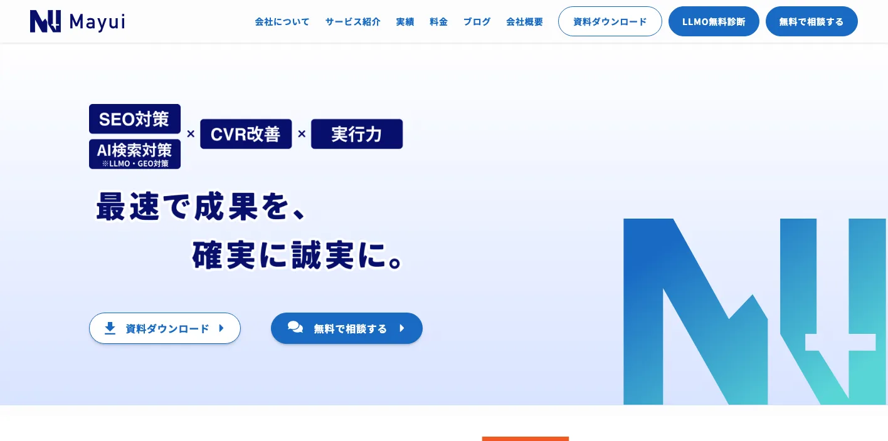
株式会社Mayuiは、厚木市に本社を置くSEOコンサルティング会社です。SEO対策を主軸にしながら、LLMO対策コンサルティングもサービスとして案内しており、ローカルサイトの改善やCVR改善まで含めて支援しています。
神奈川県の中でも県央エリアに本社があり、地域性を意識した改善提案を受けやすいのが特徴です。SEOだけでなく、問い合わせや予約など成果に近い部分まで一緒に見直したい会社に向いています。
6. 株式会社shicoo
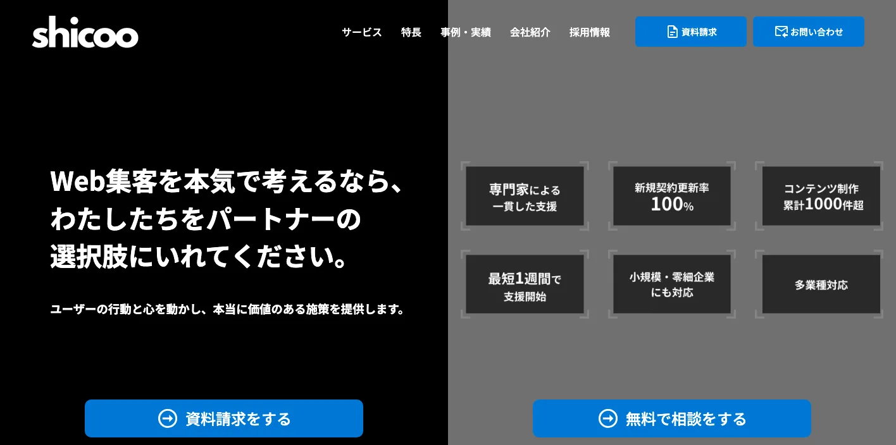
株式会社shicooは、鎌倉市に本社を置くWebマーケティング会社です。SEOコンサルティング、記事作成代行、Webサイト制作、広告運用などを提供しており、コンテンツと集客の両面から支援を受けられます。
LLMO専業ではありませんが、神奈川県の中でも湘南・鎌倉エリアに近い会社として、地域密着型の相談先を探したい場合に候補になります。コンテンツ設計から改善まで一緒に進めたい会社に向いています。
7. 株式会社ベルカ
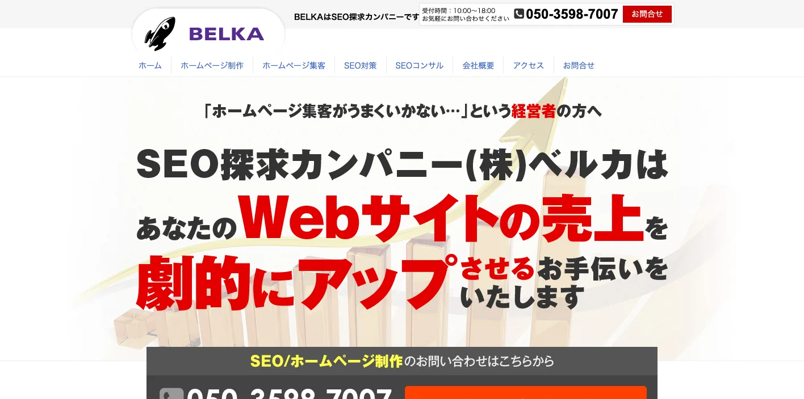
株式会社ベルカは、横浜市中区に本社を置くSEO対策会社です。ホームページ集客、SEOコンサルティング、コンテンツ作成、ホームページ制作などを長く提供しており、横浜のSEO会社として実績を積み上げてきました。
神奈川県で、まずはSEOに強い会社を軸に候補を探したい場合に外しにくい会社です。LLMOを前面に打ち出しているわけではありませんが、AI時代でも土台になる検索流入の強化を重視したい会社に向いています。
8. 株式会社ハマ企画
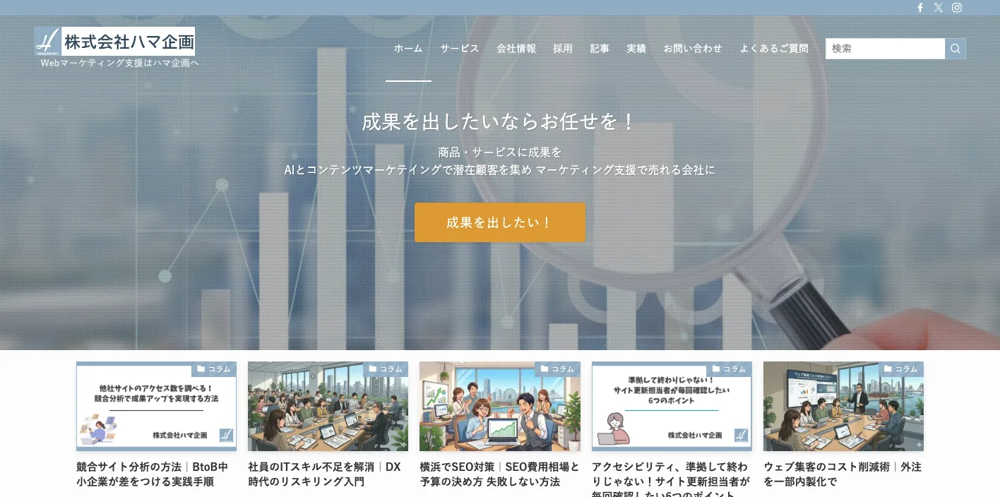
株式会社ハマ企画は、横浜市西区に本社を置くマーケティング支援会社です。SEO対策、コンテンツマーケティング、サイト制作、広告運用などを提供しており、AI時代のSEOやLLMOに触れた情報発信も増えています。
神奈川県の中小企業向けに、サイト改善から運用まで伴走する色が強い会社です。施策を単発で終わらせず、分析や改善を重ねながら進めたい会社に向いています。
9. 株式会社YTC・PLUS
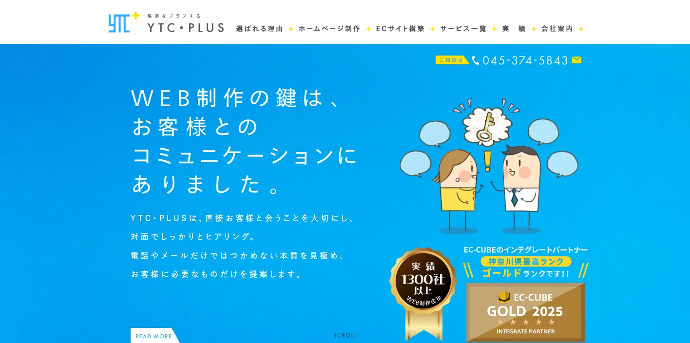
株式会社YTC・PLUSは、横浜市栄区に本社を置くWeb制作・システム開発会社です。ホームページ制作、ECサイト構築、SEO対策、広告運用まで対応しており、システム寄りの開発も含めて相談しやすいのが特徴です。
神奈川県で、制作だけでなく運用や技術面までまとめて相談したい会社に向いています。LLMO専業ではありませんが、SEOを軸にしたサイト改善の候補として入れやすい会社です。
10. Law'z LLC.
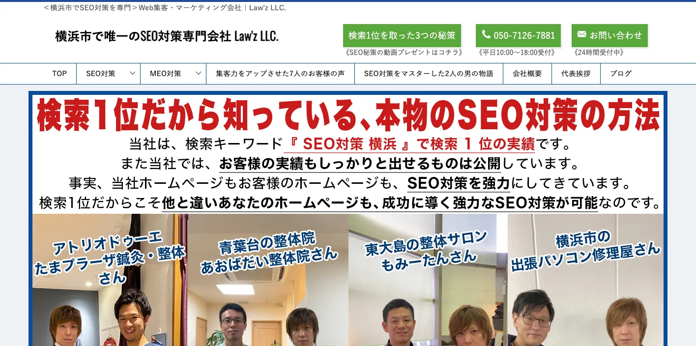
Law'z LLC.は、横浜市中区に本社を置くSEO対策専門会社です。公式サイトでも横浜市でSEO対策を専門にしていることを打ち出しており、SEO対策、MEO対策、SEOに強いホームページ制作などを提供しています。
神奈川県内で、まずは検索に強い土台を作りたい会社に向いています。AI検索対策を直接打ち出しているわけではありませんが、地域密着型でSEOの基礎を固めたい場合には十分候補になります。
地域比較も含めて見たい方は東京でおすすめのLLMO会社10選や愛知県でおすすめのLLMO会社10選、BtoB寄りの判断軸を見たい方はBtoBに強いおすすめのLLMO会社10選もあわせて確認すると、神奈川ならではの違いが見えやすくなります。
神奈川県のLLMO会社を比較する際のポイント
神奈川県でLLMO会社を選ぶときは、単にAIに詳しいかどうかだけでは判断しにくいです。県全体の人口は2024年時点で921万8,071人にのぼり、横浜市は376万7,635人、川崎市は人口密度1平方キロメートルあたり1万830人と、全国でも人と情報が集中しやすいエリアを抱えています。
一方で、相模原や県央のように広く商圏が広がる地域、湘南や箱根のように来訪を前提に選ばれる地域もあり、同じ県内でも集客の前提がかなり違います。
そのため、神奈川県のLLMO会社を比較するときは、どの地域のどの質問文脈に対応できるか、そして制作まで落とせるかを見たほうが失敗しにくくなります。ここでは、特に確認しておきたいポイントを具体的に整理します。
参考：神奈川県｜ランキングかながわ（地域編）指標数値一覧（第1章）
参考：神奈川県｜ランキングかながわ［統計指標でみる神奈川］指標数値一覧
横浜・川崎の都市型集客に強いか
横浜・川崎は、神奈川県の中でも競合が密集しやすい都市型商圏です。神奈川県の統計では、横浜市のサービス系産業の事業所数は4万9,797、従業者数は51万1,464にのぼります。さらに、横浜・川崎エリアの延べ観光客数は7,887万人で、県内でも特に人の流れが大きいエリアです。
このような地域では、ただ会社情報を載せるだけでは弱くなります。「横浜でLLMOに強い会社はどこか」「川崎でBtoB集客に強い会社はどこか」といった比較文脈に合わせて、サービスページ、比較ページ、FAQまで整理できる会社のほうが向いています。都市型商圏では、ページ単位で誰向けかをはっきりさせられるかを確認しましょう。
参考：神奈川県｜ランキングかながわ（地域編）指標数値一覧（第2章）
相模原・県央まで含む広域商圏を理解しているか
神奈川県は横浜・川崎のような都市部だけで成り立っているわけではありません。県全体で見ると、工業事業所数は7,202、工業従業者数は34万8,312人、学術・開発研究機関数は528あり、製造業や研究開発に関わる産業基盤も厚い県です。こうした業種では、商圏が市内で閉じず、県央や相模原、周辺エリアまで広がることも珍しくありません。
そのため、神奈川県のLLMOでは、都市部の店舗集客の考え方をそのまま当てはめるだけでは足りません。対応エリア、導入実績、対象業種、提供範囲などを地域別・用途別に整理しながら、「どの地域のどの悩みで探されるか」まで設計できる会社を選ぶ必要があります。広域商圏を扱う会社ほど、サービスページの切り分け方が重要です。
参考：神奈川県｜ランキングかながわ［統計指標でみる神奈川］指標数値一覧
湘南・箱根など来訪型ビジネスの導線を理解しているか
神奈川県には、来訪を前提に比較される商圏もあります。令和6年入込観光客調査では、湘南エリアの延観光客数は5,036万人、箱根エリアは3,377万人でした。鎌倉市は前年比で366万人増、藤沢市は79万人増、箱根町は80万人増となっており、エリアごとの来訪需要の大きさがはっきり出ています。
このタイプの商圏では、会社情報そのものよりも、エリア名、体験価値、アクセス、比較情報、利用シーンの見せ方が重要です。たとえば湘南なら「海沿い」「デート」「日帰り」などの探し方、箱根なら「宿泊」「温泉」「観光ルート」などの探し方が出やすくなります。
来訪型ビジネスを支援するLLMO会社を選ぶなら、こうした検索文脈の違いを理解してページ設計できるかを見たほうがよいです。
医療・福祉・生活導線型の業種に対応できるか
神奈川県では、医療、介護、生活サービスのように、地域との結びつきが強い業種も大きな比重を占めています。神奈川県の第8次保健医療計画では、「誰でも等しく良質かつ適切な保健医療サービスを受けられる」ことを基本理念に掲げ、医療機関相互の連携の下で、切れ目のない保健医療福祉サービスを提供する体制を整備するとしています。
この領域では、一般的な集客記事を増やすだけでは弱くなりやすいです。医院、介護、地域サービスなどでは、対象エリア、対応内容、利用の流れ、よくある質問、安心材料をわかりやすく整理する必要があります。生活導線型の業種で実績があるか、YMYL領域でも情報整理を丁寧に進められるかは、LLMO会社を比較するうえで重要な視点です。
参考：神奈川県｜第8次神奈川県保健医療計画（令和6年度～令和11年度）
参考：神奈川県｜ランキングかながわ（地域編）指標数値一覧（第5章）
神奈川県内で比較される前提の施策を組めるか
AI検索では、単に検索順位を追うだけでなく、比較候補としてどう見つけられるかが重要になります。Google Search Centralでも、AI OverviewsやAI Modeに表示されるために特別な追加要件はなく、通常のSEOのベストプラクティスが引き続き重要だと案内しています。
つまり神奈川県のLLMOでは、裏技よりも「誰向けに何が違うのか」「どの質問に対して出るべきか」を整理したページ設計のほうが重要です。人口規模が大きく、業種も多い神奈川県では、最初から比較される前提で、サービスの違い、対象エリア、向いている会社像を明確にできる会社のほうが成果につながりやすいです。
参考：Google for Developers｜AI Features and Your Website
神奈川の現場感に合わせて制作まで落とせるか
LLMOは、方針だけ決めても前に進みにくい施策です。Googleも、AI機能に出るためにはページがGoogle検索で表示可能で、スニペット表示の対象になっている必要があると案内しています。つまり、実際にはサービスページの書き換え、FAQ追加、内部リンク整理、地域別ページの作成など、サイト上の実装まで動かしてはじめて意味が出ます。
神奈川県のように商圏の幅が広い地域では、コンサルだけで終わるよりも、制作や改善まで一緒に進められる会社のほうが相性がよいことがあります。特に横浜・川崎向けの都市型ページ、湘南・箱根向けの来訪型ページ、県央向けの広域対応ページを分ける必要がある会社ほど、どこまで実行支援してくれるかを確認したほうがよいです。
参考：Google for Developers｜SEO Starter Guide
神奈川県のLLMO会社に依頼する費用相場
神奈川県でLLMO会社を探す場合も、費用はかなり幅があります。診断だけのスポット依頼から、月額の伴走支援、制作込みの包括支援まであり、どこまで任せるかで金額は大きく変わります。
そのため、安いか高いかだけで判断するのではなく、地域別の設計が入るのか、記事制作が含まれるのか、サービスページ改善まで対応するのかを見ながら比較することが大切です。
| 支援タイプ | 目安 | 主な内容 |
|---|---|---|
| 簡易診断・スポット相談 | 1万円〜3万円台 | 現状把握、出現状況の確認、初期課題の整理 |
| ライトな継続支援 | 月額5万円前後 | 質問設計、小規模改善、少数ページの見直し |
| 伴走型の標準帯 | 月額15万円〜20万円前後 | 定例、優先順位整理、改善提案、コンテンツ改善 |
| 戦略・大規模支援 | 月額20万円〜100万円以上 | 複数商圏対応、サイト改修、戦略設計、運用管理 |
神奈川でも「診断だけ依頼する」なら1万円〜3万円台から見つかる
まず現状を把握したい会社であれば、診断だけを依頼する方法があります。簡易的な診断であれば、1万円〜3万円台から見つかるケースもあり、最初の入口としては試しやすい価格帯です。
神奈川県内でも、どの質問で出ていないのか、競合がどう出ているのかを先に確認したい会社には向いています。まずは状況把握から始めたい場合に選びやすい方法です。
月額5万円前後は「格安帯」だが、神奈川でも試しやすい価格でもある
月額5万円前後は、LLMO支援の中では比較的始めやすい価格帯です。大きな予算を組まずに、質問設計や小規模な改善から試したい会社に向いています。
神奈川県の中小企業や店舗型ビジネスでも、この価格帯なら導入しやすいことがあります。ただし、どこまで対応してもらえるかは会社ごとの差が大きいため、記事制作や改善範囲は事前に確認が必要です。
神奈川の伴走型支援は月額15万円〜20万円前後がひとつの目安
継続的に改善提案を受けながら進めたい場合は、伴走型支援を選ぶことになります。この場合は、月額15万円〜20万円前後がひとつの目安になりやすいです。
この価格帯になると、定例ミーティング、優先順位の整理、改善提案、コンテンツ改善などが含まれやすくなります。神奈川県のように地域差が大きい場合は、このような伴走型のほうが進めやすいこともあります。
戦略設計や大規模支援まで入ると20万円〜100万円以上になることもある
より大きな支援になると、費用はさらに上がります。複数サービスを持つ会社や、既存サイトの改修まで含める場合は、月額20万円〜100万円以上になることもあります。
神奈川県内でも、県全体の導線を組み直したい場合や、複数商圏を同時にカバーしたい場合は、この価格帯を見ておいたほうが現実的です。単なる記事追加だけではない案件ほど高くなりやすいです。
神奈川で費用を見るときは「商圏に合う内容か」を必ず確認する
神奈川県は、都市型、広域型、来訪型の商圏が同じ県内に混在しています。そのため、同じ金額でも、どこまで地域別の設計をしてくれるかで価値は大きく変わります。
費用を見るときは、記事本数やミーティング回数だけでなく、地域ごとの質問設計やサービスページ改善まで入るのかを確認することが重要です。神奈川では、この視点を外すと比較がぶれやすくなります。
神奈川のLLMO費用は「小さく始める会社」と「本格投資する会社」で分かれやすい
神奈川県でのLLMOは、まず一部商圏から小さく始める会社と、県全体の導線まで見直して本格的に取り組む会社で、選ぶべきプランが大きく変わります。そのため、費用の幅も広くなりやすいです。
最初から広く取りに行く必要があるのか、それとも横浜や川崎など一部商圏から試すのかを先に決めておくと、会社選びもしやすくなります。費用は予算ではなく、進め方に合わせて考えましょう。 迷う場合は、無料LLMO診断のような小さい入口から優先順位を整理したり、格安LLMO代行の比較記事で予算の切り方を確認したりする進め方も有効です。
神奈川県のLLMO会社に関するよくある質問
ここでは、神奈川県のLLMO会社に関してよくある質問を整理しました。依頼前に気になりやすいポイントを先に押さえておくことで、自社に合う進め方を判断しやすくなります。
神奈川県のLLMO会社に依頼する意味はありますか？
あります。AI検索では、検索結果で上位を取るだけでなく、比較候補として見つかることの重要性が高まっています。神奈川県のように業種も商圏も多い地域では、質問文脈ごとに整理しておく意味があります。
神奈川本社のLLMO会社でないと意味はありませんか？
いいえ、本社所在地そのものが重要なのではありません。神奈川県の商圏の違いを理解し、地域ごとの質問文脈に合わせて設計できるかどうかのほうが重要です。
神奈川県の中小企業でもLLMOに取り組む意味はありますか？
あります。最初は小さな診断や一部ページの改善からでも始められるため、大きな予算がなくても取り組みやすいです。まずは特定エリアや特定サービスから始めるだけでも十分意味があります。
神奈川県の製造業や店舗型ビジネスでもLLMOは効果がありますか？
あります。製造業なら対応範囲や強みの整理、店舗型ビジネスならエリア別の比較情報やFAQ整理がしやすいため、AIに理解されやすい土台を作れます。業種に合わせた見せ方が重要です。
SEO会社とLLMO会社は何が違いますか？
SEO会社は主に検索結果で見つかるための支援を行います。一方でLLMO会社は、AIの回答内でどう比較されるか、どう引用されるかまで意識して情報を設計する点が違います。ただし、実際には両方をつなげて考えられる会社のほうが強いです。
神奈川県のLLMO会社に依頼したら、どれくらいで成果が出ますか？
一般的には3か月〜6か月程度を目安に考えるのが現実的です。質問の種類や競合状況によって差はありますが、短期で一気に変わるというより、改善を積み重ねながら変化を見ていく施策です。
神奈川県のLLMO会社を選ぶときは何を確認すればよいですか？
確認すべきなのは、どの地域のどの質問を狙うのか、制作まで対応するのか、料金に何が含まれるのかの3点です。神奈川県は商圏の幅が広いため、この3つを曖昧にしたまま選ぶと失敗しやすくなります。
神奈川県でLLMO会社を選ぶなら、商圏ごとの違いから逆算しましょう
神奈川県のLLMOは、横浜・川崎の都市型集客、相模原や県央の広域商圏、湘南・箱根の来訪型商圏を同じやり方でまとめないことが大切です。どのエリアで、どの質問に対して出たいのかを先に決めることで、選ぶべき会社も費用の考え方もはっきりします。
そのうえで、方針だけで終わらず、制作や改善まで動かせる会社を選ぶと前に進めやすくなります。神奈川県でLLMO会社を選ぶなら、県内の商圏差を前提に、自社に合う進め方から逆算して選びましょう。
比較の起点としては、東京のLLMO会社比較や愛知県のLLMO会社比較も見比べると、神奈川ならではの商圏差が見えやすくなります。まずは無料LLMO診断やお問い合わせから、自社がどの質問文脈で見つかるべきかを整理していくのがおすすめです。